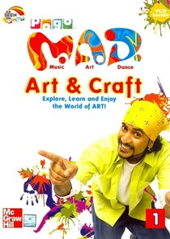

M.A.D.

Details
My notes
mad
This entry interprets “mad” as Pogo’s M.A.D. (Music, Art and Dance), the arts-and-crafts programme hosted by Rob. The title interpretation can be corrected if a different show was intended.
About the show
- Channel
- Pogo
- Host
- Rob — Harun Robert
- Type
- Children’s arts, crafts, music, and creative activities
The programme showed how everyday materials could become art projects. Contemporary reporting describes Rob’s unusual craft creations and later segments involving dance and animation.
Only the show name has been recorded as my personal memory so far. Specific projects, episodes, and viewing routines are not yet recorded.